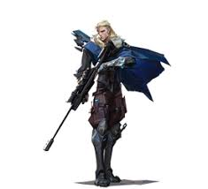

¿Qué son los Iniciadores?
Los Iniciadores facilitan el avance del equipo recopilando información sobre las posiciones enemigas o desorientando y aturdiendo zonas enteras para que el equipo pueda entrar de forma segura a los objetivos.
Lista de Iniciadores
- Sova
- Breach
- Skye
- Kay/O
- Breach
- Breach
- Iso
Sova

Origen: Severomorsk, Rusia | Rol: Iniciador
Agente experto en reconocimiento que utiliza su tecnología para rastrear y revelar la posición de los enemigos, permitiendo al equipo planificar sus ataques con precisión.
Lista de habilidades:
- Proyectil de Reconocimiento (E): Dispara un dron que vuela en línea recta y revela la ubicación de los enemigos en su campo de visión.
- Dron Búho (Q): Salto vertical para alcanzar posiciones elevadas inesperadas.
- Explosión Penetrante (C): Cuchillos arrojadizos 100% precisos que se recargan con cada baja.
- Carga letal (X): Dispara tres rayos de energía que atraviesan las paredes y causan una enorme cantidad de daño.